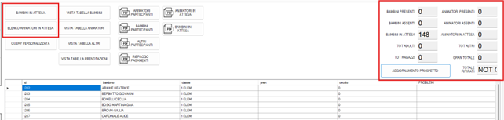

GESTionale FESTa Estate Ragazzi
Il gestionale GESTFEST è stato sviluppato per facilitare la gestione delle prenotazioni e la distribuzione dei buoni pasto durante la Festa di Estate Ragazzi.
L’interfaccia è progettata per funzionare perfettamente con tastiera e con touch screen.
🔓 Avvio del Sistema
Per avviare il programma:
- Fare doppio clic su
GestFest.exepresente sul desktop. -
Alla prima apertura comparirà la schermata di login, dove va inserito il PIN:
2025
📑 Le sezioni principali (tab laterali)
🟩 INSERIMENTO
Questa sezione è dedicata a:
- Registrare le presenze alla serata (bambini, animatori, volontari).
- Segnalare assenze certe.

Procedura:
-
Scegli il tipo di registrazione cliccando su [A]:
- Presenza: per chi parteciperà. È possibile indicare anche accompagnatori a pagamento.
- Assenza: per segnalare che una persona non sarà presente.
-
Clicca su una delle opzioni disponibili [B]:
-
Aggiungi Bambino: per selezionare un bambino già iscritto all’estate ragazzi.
-
Aggiungi Team: per aggiungere un animatore o volontario già registrato.
-
Aggiungi Altro: per aggiungere una persona non presente nel sistema, solitamente un volontario esterno.
Puoi aggiungere più persone appartenenti alla stessa categoria.
⚠ Se hai selezionato la modalità Assenza, puoi saltare direttamente al punto 5.
-
-
Inserisci eventuali accompagnatori paganti [C], suddivisi tra:
- Adulti: €10
- Bambini: €5
-
Se ricevi subito il pagamento, clicca su
TOT. VERSATOe inserisci l’importo ricevuto. -
Al termine della registrazione, clicca su
CONFERMA e STAMPA. -
Il programma chiederà conferma dell’avvenuta stampa:
- Se la stampa è uscita correttamente, clicca su Sì.
- Se non è uscita, clicca su No per far ripetere la stampa.
🟥 CANCELLAZIONE
In caso di errore nella prenotazione o cambio di idea, questa sezione permette di annullare la prenotazione fatta, così da poterne inserire una nuova correttamente.
🟦 RIEPILOGO
Sezione per la consultazione delle prenotazioni.
Funzionalità disponibili:

- Bambini in attesa: mostra i bambini che non hanno ancora prenotato e non hanno comunicato l’assenza.
- Elenco animatori in attesa: come sopra, ma per gli animatori.
- Aggiornamento prospetto: genera un riepilogo aggiornato dei partecipanti alla serata.
🟨 GESTIONE FESTA FINALE
In questa schermata è possibile distribuire i buoni ai partecipanti.
⚙️ AMMINISTRAZIONE

Questa sezione è dedicata a funzionalità speciali, da usare solo in caso di necessità:
- [BYPASS INSERIMENTO Bambino]: per aggiungere un bambino non ancora registrato.
- [BYPASS INSERIMENTO Animatore]: per aggiungere un animatore non ancora presente nel sistema.